How Multimodal Large Language Models
See, Remember and Recall Spaces
VSI-Bench: We introduce a high-quality benchmark for the evaluation of 3D, video-based, visual-spatial intelligence of MLLMs.
Evaluation: We evaluate VSI-Bench on open- and closed-source MLLMs and find that MLLMs exhibit competitive—though subhuman—visual-spatial intelligence.
Linguistic Analysis: We attribute VSI-Bench performance to spatial intelligence capabilities and show the differences between spatial and linguistic intelligence.
Visual Analysis: We illuminate how MLLMs remember spaces via cognitive maps and show how explicitly remembering spaces improves spatial capabilities.
Compare your spatial intelligence abilities with Gemini!
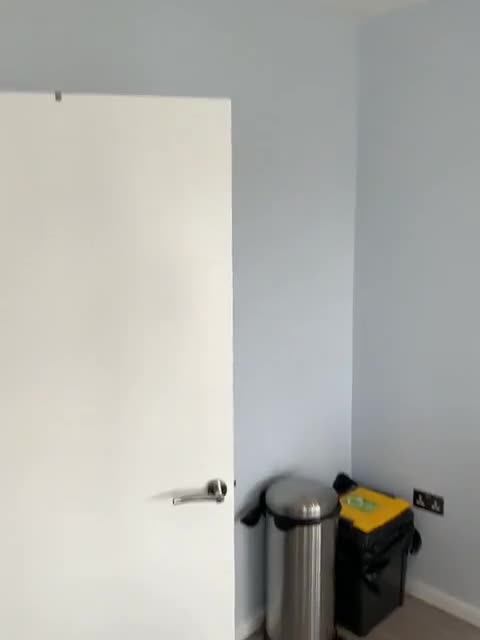
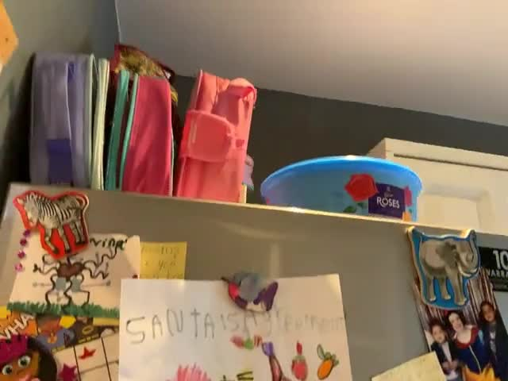
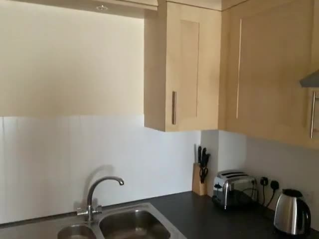
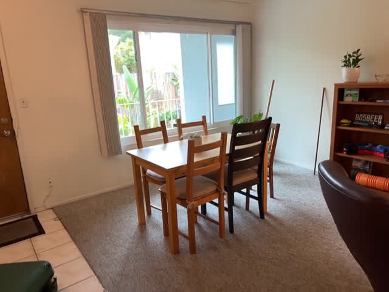
Object Size
Video is playing at 2x speed here. Feel free to adjust the speed using the controls above.
Question: What is the length of the longest dimension (length, width, or height) of the chair, measured in centimeters?
Ground Truth: 69
Gemini-1.5 Pro: 200
Click to view Ground Truth and MLLM's answer!
Object Count
Video is playing at 2x speed here. Feel free to adjust the speed using the controls above.
Question: How many chair(s) are in this room?
Ground Truth: 3
Gemini-1.5 Pro: 2
Click to view Ground Truth and MLLM's answer!
Object Count
Video is playing at 2x speed here. Feel free to adjust the speed using the controls above.
Question: How many sofa(s) are in this room?
Ground Truth: 2
Gemini-1.5 Pro: 1
Click to view Ground Truth and MLLM's answer!
Relative Direction
Video is playing at 2x speed here. Feel free to adjust the speed using the controls above.
Question: If I am standing by the refrigerator and facing the washer, is the stove to my left, right, or back?
An object is to my back if I would have to turn at least 135 degrees in order to face it.
Options:
A. Back
B. Right
C. Left
Ground Truth: Right
Gemini-1.5 Pro: Left
Click to view Ground Truth and MLLM's answer!
Relative Direction
Video is playing at 2x speed here. Feel free to adjust the speed using the controls above.
Question: If I am standing by the stove and facing the sofa, is the TV to the left or the right of the sofa?
Options:
A. Left
B. Right
Ground Truth: Left
Gemini-1.5 Pro: Right
Click to view Ground Truth and MLLM's answer!
Relative Distance
Video is playing at 2x speed here. Feel free to adjust the speed using the controls above.
Question: Measuring from the closest point of each object, which of these objects (table, stool, sofa, stove) is the closest to the TV?
Options:
A. Table
B. Stool
C. Sofa
D. Stove
Ground Truth: Table
Gemini-1.5 Pro: Sofa
Click to view Ground Truth and MLLM's answer!
Absolute Distance
Video is playing at 2x speed here. Feel free to adjust the speed using the controls above.
Question: Measuring from the closest point of each object, what is the distance between the table and the piano (in meters)?
Ground Truth: 2.3
Gemini-1.5 Pro: 0.1
Click to view Ground Truth and MLLM's answer!
Appearance Order
Video is playing at 2x speed here. Feel free to adjust the speed using the controls above.
Question: What will be the first-time appearance order of the following categories in the video: blanket, trash can, microwave, plant?
Options:
Ground Truth: C.
Gemini: B.
Click to view Ground Truth and MLLM's answer!
Room Size
Video is playing at 2x speed here. Feel free to adjust the speed using the controls above.
Question: What is the size of this room (in square meters)? If multiple rooms are shown, estimate the size of the combined space.
Ground Truth: 29.0
Gemini-1.5 Pro: 50
Click to view Ground Truth and MLLM's answer!
Route Plan
Video is playing at 2x speed here. Feel free to adjust the speed using the controls above.
Question: You are a robot beginning at the door and facing the bed. You want to navigate to the window. You will perform the following actions (Note: for each [please fill in], choose either 'turn back,' 'turn left,' or 'turn right.'): 1. Go forward until the edge of bed 2. [please fill in] 3. Go forward until the wall 4. [please fill in] 5. Go forward until the window. You have reached the final destination.
Options:
Ground Truth:B
Gemini-1.5 Pro:C
Click to view Ground Truth and MLLM's answer!
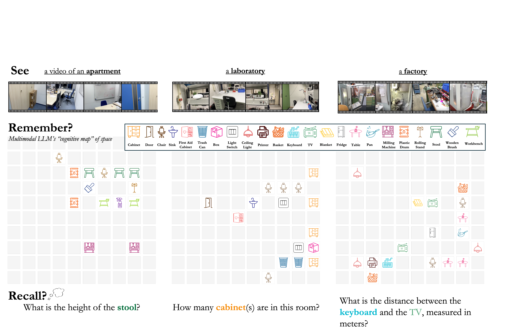
Figure 1: Can Multimodal LLMs “think spatially” when presented with a video recording of an environment? Can they build an accurate, implicit “cognitive map” that allows them to answer questions about a space? What are the strengths and limitations of using MLLMs to enhance spatial intelligence? We dig into these questions by setting up video data for MLLMs to watch, building a VQA benchmark to check their recall, and examining what the MLLMs actually remember and understand.
We present a novel video-based visual-spatial intelligence benchmark (VSI-Bench) of over 5,000 question-answer pairs, and find that MLLMs exhibit competitive - though subhuman - visual-spatial intelligence.
Our evaluation reveals that MLLMs exhibit competitive visual-spatial intelligence, if still well short of human-level.
To understand the MLLMs' behavior, we probe models to express how they think in space both linguistically and visually and find that while spatial reasoning capabilities remain the primary bottleneck for MLLMs to reach higher benchmark performance, local world models and spatial awareness do emerge within these models.
Benchmark Overview: We develop VSI-Bench, a benchmark to evaluate the visual-spatial intelligence of Multimodal LLMs (MLLMs) using over 5,000 question-answer pairs derived from 288 egocentric videos sourced from the validation sets of public indoor 3D scene reconstruction datasets ScanNet, ScanNet++, and ARKitScenes. VSI-Bench includes eight tasks under three task types: configurational, measurement estimation, and spatiotemporal. See Fig. 2 for an overview of the tasks in VSI-Bench and Fig. 3 for dataset statistics. Iteratively refined for quality, VSI-Bench provides a foundation to study the connection between MLLMs and 3D reconstruction.
Figure 2: Tasks demonstration of VSI-Bench.
Note: the questions above are simplified slightly for clarity and brevity.
Figure 3: Benchmark Statistics.Left: The distribution of tasks across three main categories. Right: The video length statistic.
VSI-Bench Construction:
We develop a robust pipeline to construct VSI-Bench that enables high-quality question-answer (QA) pair generation at scale. Starting with data collection and unification, we standardize diverse 3D indoor scene datasets into a unified meta-information format, incorporating object categories, bounding boxes, and video specifications to support dataset-agnostic QA generation. QA pairs are generated using automated annotations from meta-information and task-specific question templates, with route planning tasks manually annotated. To ensure quality, we implement a human-in-the-loop review process, iteratively refining question templates, annotations, and QA generation rules by addressing ambiguities and errors flagged by evaluators.
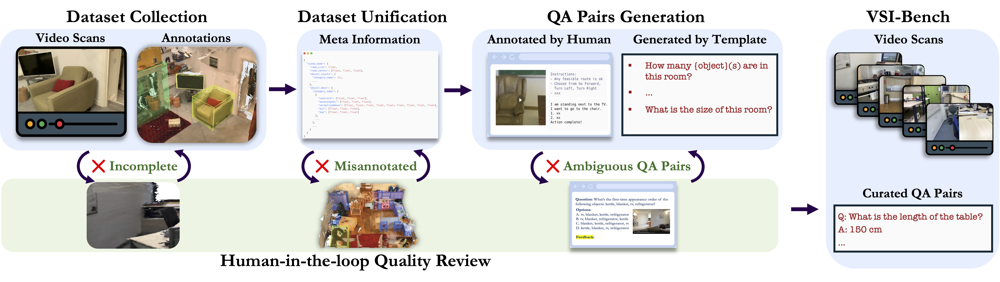
Figure 4: Benchmark curation pipeline. The pipeline unifies datasets into a standardized format and semantic space for consistent processing. QA pairs are then generated through both human annotation and question templates. To ensure quality, human verification is implemented at all key stages for filtering low-quality videos, annotations, and ambiguous QA pairs.
Evaluation on VSI-Bench
Evaluation Setup:
We benchmarked 15 video-supporting MLLMs from diverse model families. For proprietary models, we consider Gemini-1.5 and GPT-4o. For open-source models, we evaluate models from InternVL2, ViLA, LongViLA, LongVA, LLaVA-OneVision, and LLaVA-NeXT-Video. All evaluations are conducted in zero-shot settings with default prompts and greedy decoding for reproducibility. Tasks are evaluated using either Multiple-Choice Answer (MCA) accuracy or our proposed Mean Relative Accuracy (MRA) for Numerical Answer (NA) tasks.
Baselines include random selection and frequency-based answer selection to identify performance gains due to distribution biases. Additionally, human performance is assessed on a randomly sampled subset of 400 questions (VSI-Bench tiny), with metrics compared to Gemini-1.5 Pro.
Main Results:
Human evaluators achieve an average accuracy of 79%, outperforming the best model by 33%, with near-perfect performance (94%-100%) on configuration and spatiotemporal tasks. However, the gap narrows on measurement tasks that require precise estimation, where MLLMs demonstrate relative strength in quantitative tasks. Among proprietary models, Gemini-1.5 Pro stands out, significantly exceeding chance baselines and approaching human performance in tasks like absolute distance and room size estimation, despite being trained only on 2D digital data. Top-performing open-source models, such as LLaVA-NeXT-Video-72B and LLaVA-OneVision-72B, achieve competitive results, trailing Gemini-1.5 Pro by just 4%-5%. However, most open-source models (7/12) fall below chance baselines, revealing notable deficiencies in visual-spatial intelligence.
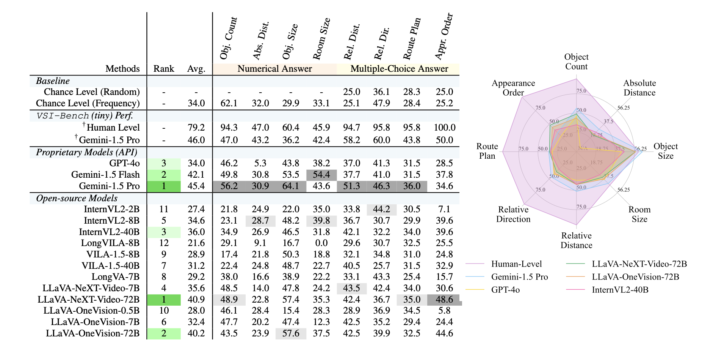
Table 1: Evaluation on VSI-Bench.Left: Dark gray indicates the best result among all models and light gray indicates the best
result among open-source models. † indicates results on VSI-Bench (tiny) set. Right: Results including the top-3 open-source models.
Blind Evaluation:
We compare MLLMs' performance against “Chance Level (frequency)” and “Vision Disabled” (blind) results, averaged across six top models (three open-source and three closed-source). The consistent improvements in “Enabled-Disabled” and the general degradation in “Disabled-Chance” highlight the importance of video input for VSI-Bench, as blind models perform worse than chance. However, MLLMs struggle to surpass chance level on tasks such as absolute distance estimation, route planning, and relative direction, reflecting the inherent difficulty of these tasks. Interestingly, “Vision Disabled” models significantly outperform chance on object size tasks, likely due to the integration of common-sense knowledge from language model training.
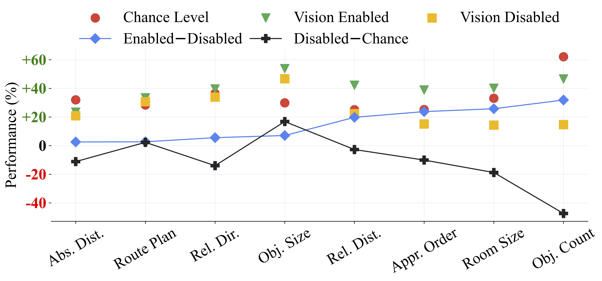
Figure 5: Performance comparisons between Vision Enabled
(w/ video), Vision Disabled (w/o video) and Chance Level
(Freq.).
How MLLMs Think in Space Linguistically
To better understand when and why models succeed or fail and to elucidate the facets of visual-spatial intelligence they possess, we examine how MLLMs think in space linguistically.
Case Studies:
In the success example, the model demonstrates advanced video understanding with accurate timestamped descriptions and a correct step-by-step reasoning process. The use of a global coordinate system suggests that MLLMs may construct implicit world models by integrating spatial context and reasoning. In the error case, the model fails in egocentric-allocentric transformation, incorrectly interpreting a video sequence due to reliance on the egocentric view, leading to a flawed spatial inference.
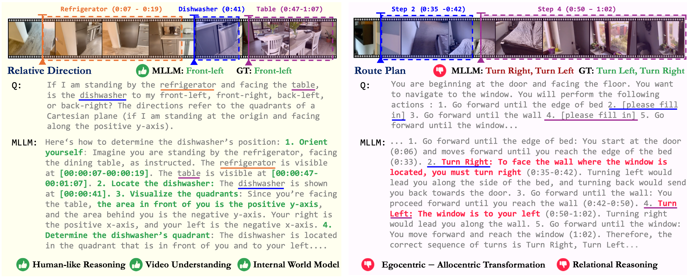
Figure 6: Examples of how a MLLM thinks as seen in self-explanations.
Error Analysis:
Analysis of errors from the best-performing MLLM on VSI-Bench (tiny) identifies four main error types: visual perception, linguistic intelligence, relational reasoning, and egocentric-allocentric transformation. Figure 6 reveals that 71% of errors stem from spatial reasoning, particularly in understanding distance, size, and direction. This indicates that spatial reasoning remains the key bottleneck for improving MLLM performance on VSI-Bench.
Figure 7: Human-conducted analysis of errors by type.
Finding 1: Spatial reasoning is the primary bottleneck for MLLM performance on VSI-Bench.
Limits of CoT Methods in Visuospatial Tasks:
We investigate three prompting techniques—Zero-Shot Chain-of-Thought (CoT), Self-Consistency with CoT, and Tree-of-Thoughts (ToT)—to improve MLLM reasoning on VSI-Bench.
Surprisingly, all three methods led to performance degradation (see Fig. 8),
with Zero-Shot CoT and ToT reducing average performance by 4%,
and Self-Consistency falling 1.1% below the baseline.
While the appearance order and absolute distance estimation tasks saw slight improvements due to reduced linguistic errors,
the room size and object size tasks suffer a large 8% to 21% decrease,
showing that encouraging a model to think more can be not just unreliable
but downright harmful.
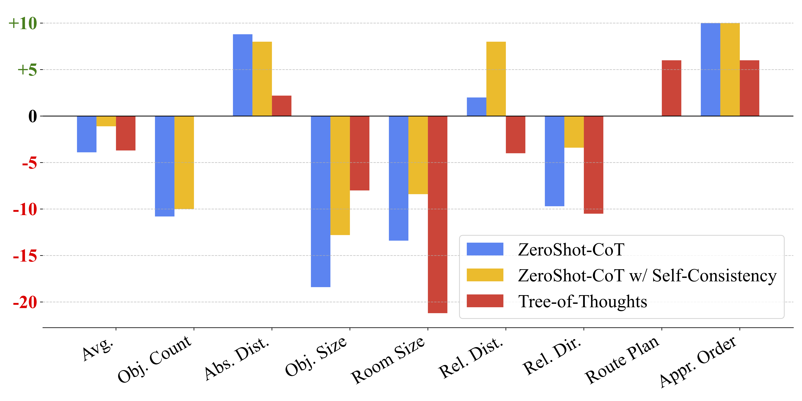
Figure 8: Relative improvements of CoT, self-consistency and
Tree-of-Thought compared to the baseline.
Meanwhile, as shown in Tab. 2, ZeroShot CoT achieves a 1.6% improvement on the general
video understanding benchmark VideoMME.
Case
Performance
Gemini-1.5 Pro (w/o CoT)
77.2
Gemini-1.5 Pro (w/ CoT)
79.8
Table 2: Gemini-1.5 Pro CoT performance on a 500-questions
subset in VideoMME.
Finding 2: Linguistic prompting techniques, although effective in language reasoning and general visual tasks, are primarily harmful for spatial reasoning.
How MLLMs Think in Space Visually
Since humans subconsciously build mental representations of space when reasoning spatially, we explore how MLLMs remember spaces.
Probing via Cognitive Maps:
We evaluate MLLMs' ability to create cognitive maps, a framework for spatial representation, by prompting Gemini-1.5 Pro to predict object center positions within a 10 x 10 grid based on video input. Accuracy was measured by comparing predicted object distances with ground truth maps, considering deviations within one grid unit as correct. The model achieved 64% accuracy in positioning adjacent objects, demonstrating strong local spatial awareness but struggling with larger distances, reflecting challenges in forming global spatial representations from discrete video frames.
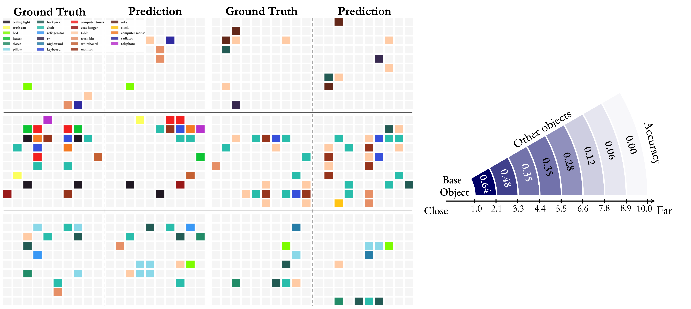
Figure 9. Left: Visualizations of cognitive maps from MLLM and GT. Right: Locality of the MLLM's predicted cognitive maps.
Finding 3: When remembering spaces, a MLLM forms a series of local world models in its mind from a given video, rather than a unified global model.
Better Distance Reasoning via Cognitive Maps:
We explored whether cognitive maps could enhance MLLMs' spatial reasoning by prompting Gemini-1.5 Pro to generate a map from video input and use it to answer relative distance questions. Results showed a 10% accuracy improvement with the model's own map and a 20%-32% gain using ground truth maps, highlighting the value of accurate mental imagery for enforcing global scene topology. This suggests cognitive mapping as a promising approach to improve MLLMs' visual-spatial reasoning.
(a) Cognitive map prompting.
Case
Rel. Dist Acc.
w/o Cog. map
46.0
w/ Cog. map
56.0
w/ Cog. map (GT)
66.0
(b) Cognitive map canvas size.
Cog. Map Src.
Size
Rel. Dist Acc.
MLLM
10 × 10
56.0
MLLM
20 × 20
54.0
GT
10 × 10
66.0
GT
20 × 20
78.0
Table 3: Relative distance task with cognitive map.
Conclusion
We study how models see, remember, and recall spaces by building VSI-Bench and investigating the performance
and behavior of MLLMs on it. Our analysis of how MLLMs think in space linguistically and visually identifies existing strengths (e.g., prominent perceptual, temporal, and linguistic abilities) and bottlenecks for visual-spatial intelligence (e.g., egocentric-allocentric transformation and relational reasoning). While prevailing linguistic prompting methods fail to improve spatial reasoning, building explicit cognitive maps does enhance the spatial distance reasoning of MLLMs.
BibTeX
@article{yang2024think,
title={{Thinking in Space: How Multimodal Large Language Models See, Remember and Recall Spaces}},
author={Yang, Jihan and Yang, Shusheng and Gupta, Anjali and Han, Rilyn and Fei-Fei, Li and Xie, Saining},
year={2024},
journal={arXiv preprint},
}